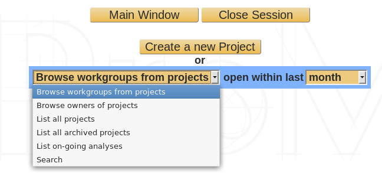
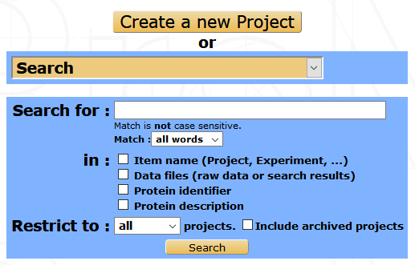

Projects accessibility¶
All MS search results and data subsequently generated are organized in projects. A project regroups sets of data that belong to the same user or group of users and generated in the context of a defined scientific project. End-user (biologists and managers outside their workgroup) accessibility to the data is defined at the project level.
Project selection¶
From myProMS main window, follow the Projects link to display the Project selection interface.
For biologists, a straightforward list of the projects they have access to will be displayed. For other classes of users, projects can be organized based on the following topics: Workgroups (default), Project owners, Active projects and Archived projects. Corresponding projects are listed by ascending name. Their description, owner and/or workgroup together with the access credentials of current user. If On-going analyses is selected, the list generated is composed of Analyses still undergoing validation. Their name, description, data file name, creation date and corresponding project are displayed. This list can be sorted by Import date, Name, MS type, Validation status and Data file name.
Alternatively, a Search can be performed using various criterias:
Projects are then listed together with the items that were matched during the search.
Once listed, click on the Open button to go to the selected project.
Project life span¶
- On-going: Once created, a project is set as active and on-going. This means that it can be populated with new items and data. On-going projects are flagged with a yellow icon in the project selection window.
- Ended: If the project is judged completed, it can be edited and ended by clicking on the End button at the bottom of the edition form. Ending a project will automatically end all partially-validated analyses without new reporting (see Validations and Reporting sections in the Analysis management chapter below for more information). Once ended, a project is still active and accessible but can no longer be edited or populated. Ended projects are flagged with a green icon in the project selection window.
- Archived: As time passes, some project might no longer be accessed by any users. These projects can be archived to save space on the server. All data files stored outside the database will be compressed. Archived projects are flagged with a red icon and are no longer accessible for data exploration. They can however be listed in the Project selection window by selecting “List of: Archived projects”.
- Restoration: Archived and Ended projects can be fully restored to any activity state if necessary by clicking on the appropriate button in the project home page.
Accessibility¶
Bioinformaticians and massists have full access to all projects recorded in myProMS.
Data managers have full access to all projects within their workgroup.
Biologists and managers outside their workgroup must be explicitly granted access to projects when needed.
The project access management interface is accessible from the project’s home page by clicking on the Project Accessibility button in the option frame.
The interface summarizes the list of users able to access the project together with their credentials. New users can be added one at a time. Once added to the access list, users are guests by default. Select the credentials you wish to provided each user with. The access rights available are listed below the user access form. See also User classes and access privileges for more information.
Click on the Save button to validate any changes.